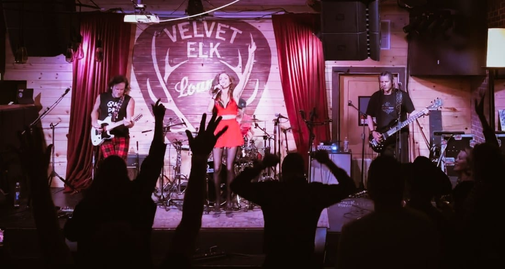

MUSIC
What does Colorado Springs sound like?
The Springs is split down the middle. One half is jazz, with horn players all over town and bluegrass from the mountains next door. The other half still loves loud rock. Here is where to hear it, and who we’d put in front of your guests.

A conference is coming to the Broadmoor, or a wedding party is spending the weekend under Pikes Peak. The host has a ballroom, a date and a group from out of town, and wants to know what the city sounds like before choosing the music.
Colorado Springs is split down the middle. One half is jazz, with horn players all over town and bluegrass from the mountains next door. The other half grew up on the loud, aggressive rock of the early 2000s and still loves it.
Why is there so much jazz in Colorado Springs? #
The Air Force. The United States Air Force Academy Band is based in the Springs, with sixty active-duty musicians, and its big band is called the Falconaires. That puts a lot of horn players in one town, and horn players love jazz.
So the Springs has a developed jazz scene, with players like Ricky Sweum, Todd Williams, Steve Langemo and Susan Rissman. The Todd Williams Trio plays great straight-ahead jazz.
Jazz isn’t everyone’s taste. The area is rich in it.
Where can a visitor hear it? #
On Thursdays there’s jazz in the lobby of the Mining Exchange Hotel downtown. For the local flavor, there’s Armadillo Ranch in Manitou Springs, next door.
The Broadmoor hires polished, soothing talent. Its pub is the exception. The Golden Bee is an English pub from the 1800s that the resort brought over in pieces and opened in 1961, and it has ragtime piano and a sing-along every night.
What about bluegrass? #
Bluegrass is strong in the Springs too. Manitou Springs is right next door, and the mountain town influence is real. A trio on a lawn with Cheyenne Mountain behind it sounds like it belongs. Our Americana band covers that ground, and we wrote about how Americana differs from strict bluegrass.
What is the other half? #
The other half of the city grew up on the loud, aggressive rock of the early 2000s, and people still love it. The clubs cater to that crowd.
So on the same night, one crowd is listening to a jazz trio in a hotel lobby and another is at a hard rock show across town.
What do corporate groups in the Springs want? #
A corporate group in the Springs usually wants a clean, nostalgic party band. When people are there for work, they care less about hearing the city.
So when we send a band down, it’s Quadrasonic, who come from the Vail Valley and play the rock songs everyone knows, from Pat Benatar to Nirvana. Or it’s our millennial party rock band, who play the songs people still know every word to from high school and college.
If the group does want to hear the city, we’d put the Changes Jazz Trio on through cocktails and dinner. For a lodge up the mountain, Meghan Clarisse can play solo by the fireplace or bring her band.
Our pages on the Broadmoor, Garden of the Gods Resort and Cheyenne Mountain Resort list the spaces and the acts we’d suggest for each. We also have ideas for a holiday party in Colorado Springs and a Colorado Springs wedding.
| The event | What fits | Who we’d put on |
|---|---|---|
| A company party | A clean, nostalgic party band | Quadrasonic, the millennial party rock band |
| Cocktails and dinner, for a group that came to hear the city | Straight-ahead jazz | The Changes Jazz Trio |
| A lodge or a lawn with the mountains behind it | Bluegrass and Americana | The Americana band, Meghan Clarisse |
| A ceremony in a ballroom | Strings | The string quartet |
Sources
- United States Air Force Academy Band, Our Mission. Read the source
- United States Air Force Academy Band, The Falconaires. Read the source
- Springs Magazine, 6 Reasons We Love the Mining Exchange Hotel. Read the source
- Visit Colorado Springs, Music Monday: Jazz at the Armadillo Ranch. Read the source
- The Broadmoor, Golden Bee. Read the source